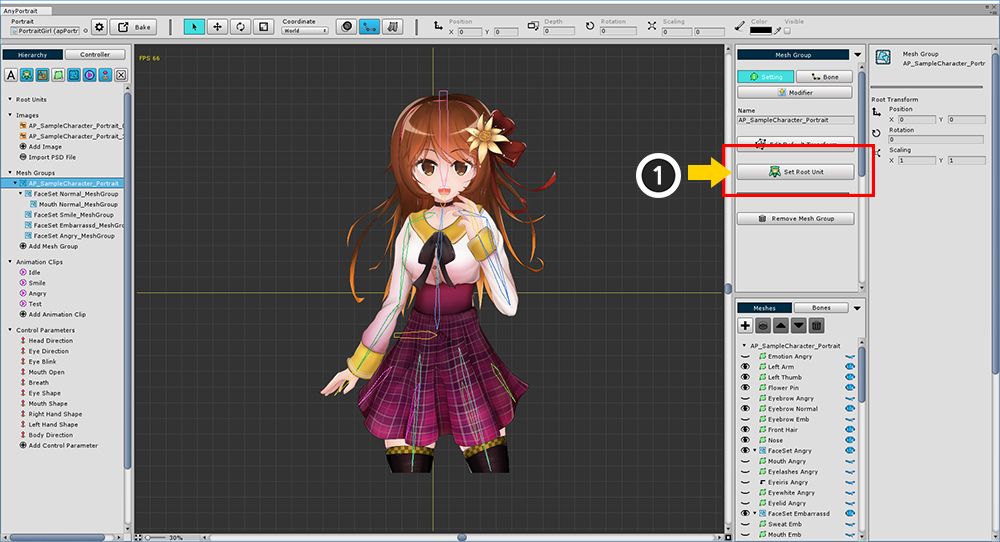
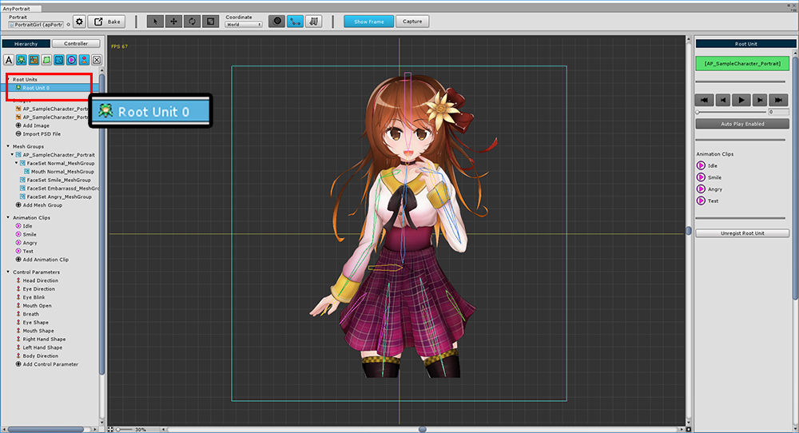
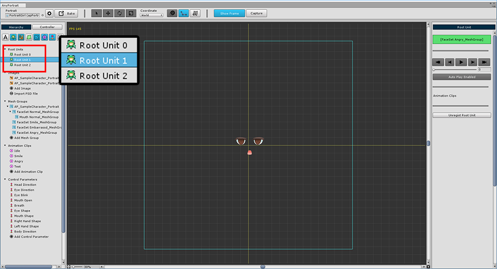

AnyPortrait > 메뉴얼 > 루트 유닛 등록과 해제
루트 유닛 등록과 해제
1.0.0

작업한 캐릭터를 씬으로 옮기기 위해서는 루트 유닛으로 등록해야합니다.
메시 그룹의 Setting 탭을 선택한 상태에서 Set Root Unit 버튼을 눌러서 루트 유닛으로 등록합니다.

Hierarchy UI에 Root Unit 0이 새로 등록한 것을 확인할 수 있습니다.
루트 유닛은 별도의 이름이 없으며 등록 순서대로 번호(Index)가 부여됩니다.
스크립트에서 제어할 경우 이 번호를 이용해서 구분하면 됩니다.

루트 유닛을 선택한 화면에서 (1) 자동으로 시작할 애니메이션을 지정할 수 있으며,
(2) 루트 유닛으로부터 등록을 해제할 수 있습니다.

2개 이상의 루트 유닛을 등록하는 것도 가능합니다.
다수의 루트 유닛을 등록하여 사용하는 경우 다음과 같은 특징이 있습니다.
- 0번 루트 유닛이 기본값이며 나머지는 숨겨진 상태가 됩니다.
- 스크립트의 함수를 이용하여 루트 유닛을 전환할 수 있습니다.
- 스크립트를 이용하여 애니메이션을 실행하면 자동으로 애니메이션에 해당하는 루트 유닛으로 전환합니다.
- 루트 유닛의 번호는 등록 순서대로 지정됩니다.